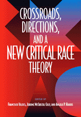

<body bgcolor="#FFFFFF" text="#000000" link="#0000FF" vlink="#CC0000" alink="#CC0000"><center><hr width="350" size="1" align="center" noshade>A powerful collection of original essays on the history of Critical Race Theory<hr width="350" size="1" align="center" noshade><p><a href="https://cdcshoppingcart.uchicago.edu/Cart/ChicagoBook.aspx?ISBN=9781566399296&&PRESS=temple" target="_top">Buy this book!</a> | <a href="https://cdcshoppingcart.uchicago.edu/Cart/Cart.aspx?PRESS=temple" target="_top">View Cart</a> | <a href="https://cdcshoppingcart.uchicago.edu/Cart/Cart.aspx?PRESS=temple" target="_top">Check Out</a></p><p></p></center><!--none//--><h1>Crossroads, Directions, and a New Critical Race Theory</h1>
<h3>edited by Francisco Valdes, Jerome McCristal Culp and Angela P. Harris</h3>
<P>cloth 1-56639-929-7 $79.50, Jul 02, <FONT COLOR=#990033>Out of Stock Unavailable</FONT>
<br>paper 1-56639-930-0 $46.95, Jul 02, <FONT COLOR=#990033>Available</FONT>
<br>Electronic Book 1-43990-779-X $46.95 <FONT COLOR=#990033>Out of Stock Unavailable</FONT>
<BR> 440 pp
7x10
1&nbsp;table 1&nbsp;figure
</P><BLOCKQUOTE><I>"The book will appeal to race and legal scholars in the US as well as in the UK. The breadth of topics and methodologies covered within the volume is certainly impressive and the teaming of chapters from established academics with younger scholars give the book a fresh approach to the study of critical race theory."</i>
<br>&#151<b><i>The Journal of Ethnic and Racial Studies</i></b><i></I></BLOCKQUOTE>
<p>Its opponents call it part of "the lunatic fringe," a justification for "black separateness," "the most embarrassing trend in American publishing." "It" is Critical Race Theory.
<p>But what is Critical Race Theory? How did it develop? Where does it stand now? Where should it go in the future? In this volume, thirty-one CRT scholars present their views on the ideas and methods of CRT, its role in academia and in the culture at large, and its past, present, and future.
<p>Critical race theorists assert that both the procedures and the substance of American law are structured to maintain white privilege. The neutrality and objectivity of the law are not just unattainable ideals; they are harmful actions that obscure the law's role in protecting white supremacy. This notion&#151so obvious to some, so unthinkable to others&#151has stimulated and divided legal thinking in this country and, increasingly, abroad.
<p>The essays in <I>Crossroads, Directions, and a New Critical Race Theory</I>&#151all original&#151address this notion in a variety of helpful and exciting ways. They use analysis, personal experience, historical narrative, and many other techniques to explain the importance of looking critically at how race permeates our national consciousness.
<BR>&nbsp;<h2>Excerpt</h2><P>Excerpt available at <a href="http://www.temple.edu/tempress">www.temple.edu/tempress</a></p>
<BR>&nbsp;<h2>Reviews</h2>
<p><I>"The book is a must-read for those who are interested in the genesis of CRT [Critical Race Theory], in how CRT positions itself against other legal discourses, and in the current debates within the CRT literature."</I>
<br>&#151<b><I>Yale Law Journal</I></b>
<p><I>"The essays are a snapshot of a sprawling, unruly, and sometimes fractious field. Meant to evaluate the first ten years of critical race theory's development, the book truly captures a discipline at the crossroads, struggling with how to define its substantive mission, methodological commitments, and connection to a world outside the academy."</I>
<br>&#151<b><I>Stanford Law Review</I></b>
<p><i>"On the whole, this collection will leave those of us with an investment in (and a debt to pay to) critical race theory optimistic about its future."</i>
<br>&#151<b><i>Social and Legal Studies</b></i>
<p><i>"The volume certainly offers much material for another conservative broadside against critical race theory, but by speaking their truth&#151and speaking it elegantly&#151this collection of 'outsider' academics has offered a telling and important contribution to the future."</i>
<br>&#151<b><i><a href="http://www.findarticles.com/p/articles/mi_m0DXK/is_20_19/ai_95148368" target="new">Black Issues in Higher Education</a></i></b>
<BR>&nbsp;<h2>Contents</h2><P>
<p>Foreword: Who Are We? And Why Are We Here? Doing Critical Race Theory in Hard Times &#150 Charles R. Lawrence III
<br>Introduction: Battles Waged, Won, and Lost: Critical Race Theory at the Turn of the Millennium &#150 Francisco Valdes, Jerome McCristal Culp, and Angela P. Harris
<p><b>Part I: Histories</b>
<br>1. The First Decade: Critical Reflections, or "A Foot In the Closing Door" &#150 Kimberlé Williams Crenshaw
<br>2. Historicizing Critical Race Theory's Cutting Edge: Key Movements that Performed the Theory &#150 Sumi Cho and Robert Westley
<br>3. Keeping It Real: On Anti-"Essentialism" &#150 Catharine A. MacKinnon
<p><b>Part II: Crossroads</b>
<br><b>Section A: Race</b>
<br>Critiquing "Race' and Its Uses: Critical Race Theory's Uncompleted Argument &#150 Robert S. Chang
<br>4. The Poetics of Colorlined Space &#150 Anthony Paul Farley
<br>5. Un-Natural Things: Constructions of Race, Gender, and Disability &#150 Robert L. Hayman, Jr., and Nancy Levit
<br>6. Race and the Immigration Laws: The Need for Critical Inquiry &#150 Kevin R. Johnson
<br>7. "Simple Logic": Race, the Identity Documents Rule, and the Story of a Nation Besieged and Betrayed &#150 Sherene H. Razack
<br>8. Straight Out of the Closet: Race, Gender, and Sexual Orientation &#150 Devon W. Carbado
<br><b>Section B: Narrativity</b>
<br>Celebrating Racialized Legal Narratives &#150 Margaret E. Montoya
<br>9. The Unbearable Whiteness of Being &#150 Thomas Ross
<br>10. Construction Project: Color Me Queer + Color Me Family = Camilo's Story &#150 Victoria Ortiz and Jennifer Elrod
<br>11. On Being Homeless: One Aboriginal Woman's "Conquest" of Canadian Universities &#150 1989-98 &#150 Patricia Monture-Angus
<br>12. Dinner and Self-Determination &#150 Henry J. Richardson III
<br><b>Section C: Globalization</b>
<br>Critical Race Theory in Global Context &#150 Celina Romany
<br>13. Global Markets, Racial Spaces, and the Role of Critical Race Theory in the Struggle for Community Control of Investments: An Institutional Class Analysis &#150 Elizabeth M. Iglesias
<br>14. Global Feminism at the Local Level: The Criminalization of Female Genital Surgeries &#150 Isabelle R. Gunning
<br>15. Breaking Cycles of Inequality: Critical Theory, Human Rights, and Family In/Justice &#150 Berta Esperanza Hermandez-Truyol
<br>16. Critical Race Theory and Post-Colonial Development &#150 Enrique R. Carrasco
<p><b>Part III: Directions</b>
<br>17. Critical Coalitions: Theory and Praxis &#150 Julie A. Su and Eric Y. Yamamoto
<br>18. Beyond, and Not Beyond, Black and White: Deconstruction has a Politics &#150 Mari Matsuda
<br>19. Outsider Scholars, Critical Race Theory, and "Outcrit" Perspectivity: Postsubordination Vision as Jurisprudential Method &#150 Francisco Valdes
<p>Afterword: The Handmaid's Truth &#150 Derrick A. Bell
<br>About the Contributors
</P><BR>&nbsp;<H2>About the Author(s)</H2>
<P><b>Francisco Valdes</b> is Professor of Law at the University of Miami School of Law.</P>
<P><b>Jerome McCristal Culp</b> is Professor of Law at Duke University School of Law.</P>
<P><b>Angela P. Harris</b> is Professor of Law at the University of California at Berkeley.</P>
<BR><H2>Subject Categories</H2>
<p><A HREF="/tempress/general.html" TARGET="_top">General Interest</a>
<BR><A HREF="/tempress/law.html" TARGET="_top">Law and Criminology</a>
<BR><A HREF="/tempress/african.html" TARGET="_top">African American Studies</a>
</p>
<p align="center"><a href="https://cdcshoppingcart.uchicago.edu/Cart/ChicagoBook.aspx?ISBN=9781566399296&&PRESS=temple" target="_top">Buy this book!</a> | <a href="https://cdcshoppingcart.uchicago.edu/Cart/Cart.aspx?PRESS=temple" target="_top">View Cart</a> | <a href="https://cdcshoppingcart.uchicago.edu/Cart/Cart.aspx?PRESS=temple" target="_top">Check Out</a></p><p><font face="Arial" size="1"><a href="copyright.html" onMouseOver="window.status='Web Copyright Policy';return true;" onMouseOut="window.status=''" title="Web Copyright Policy">&copy;</a> 2015 <a href="http://www.temple.edu" target="new" onMouseOver="window.status='Link to Temple University home page';return true;" onMouseOut="window.status=''" title="Link to Temple University home page">Temple University</a>. All Rights Reserved. http://www.temple.edu/tempress/titles/1603_reg.html</font></p>